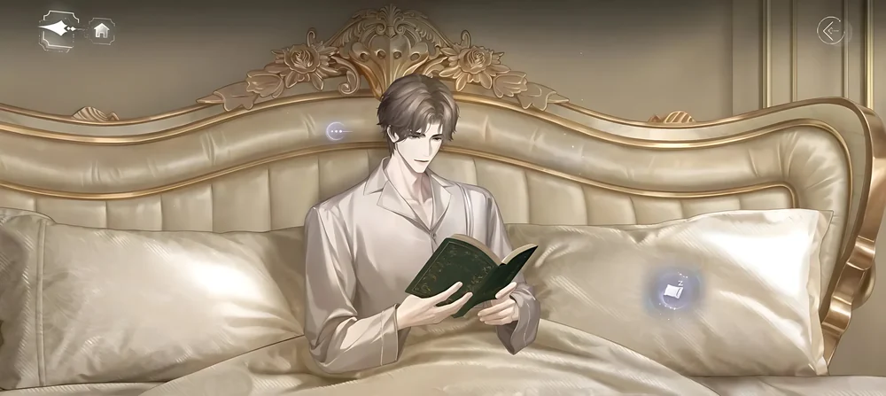
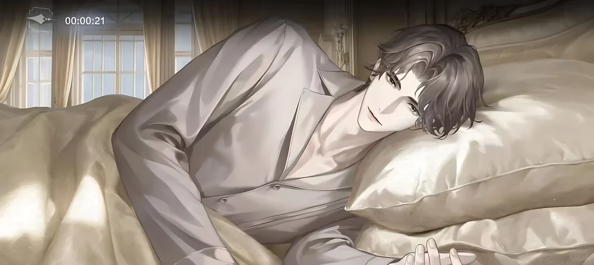
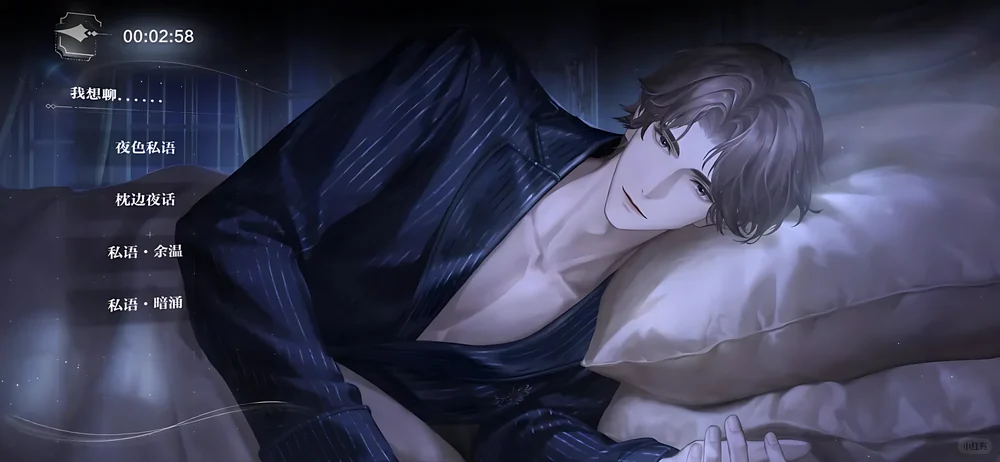
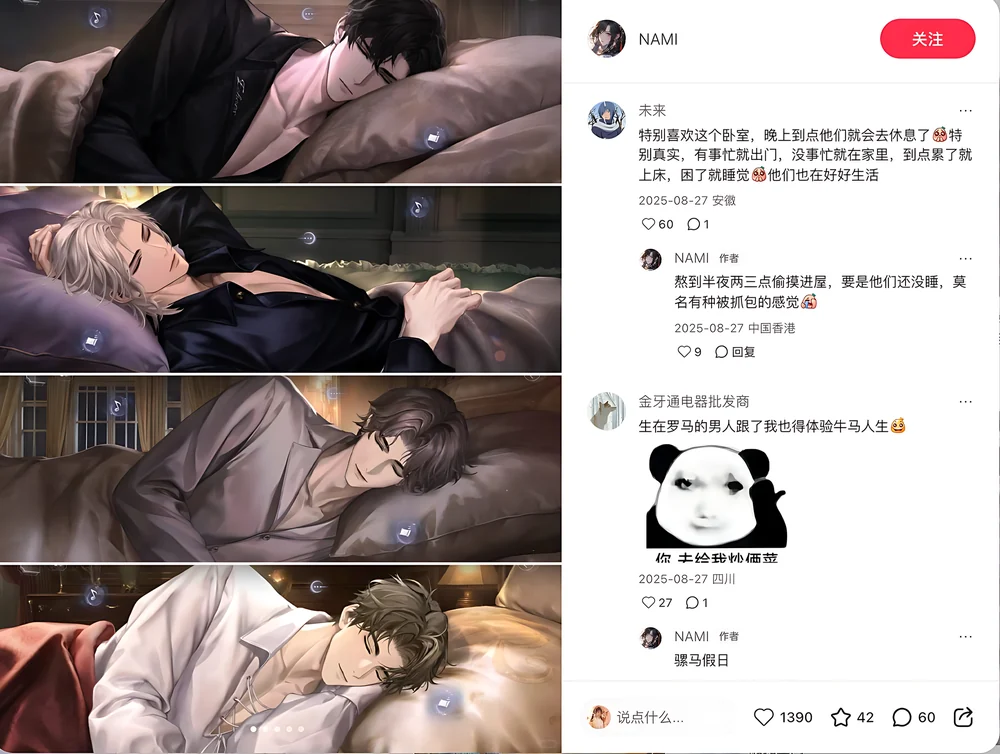
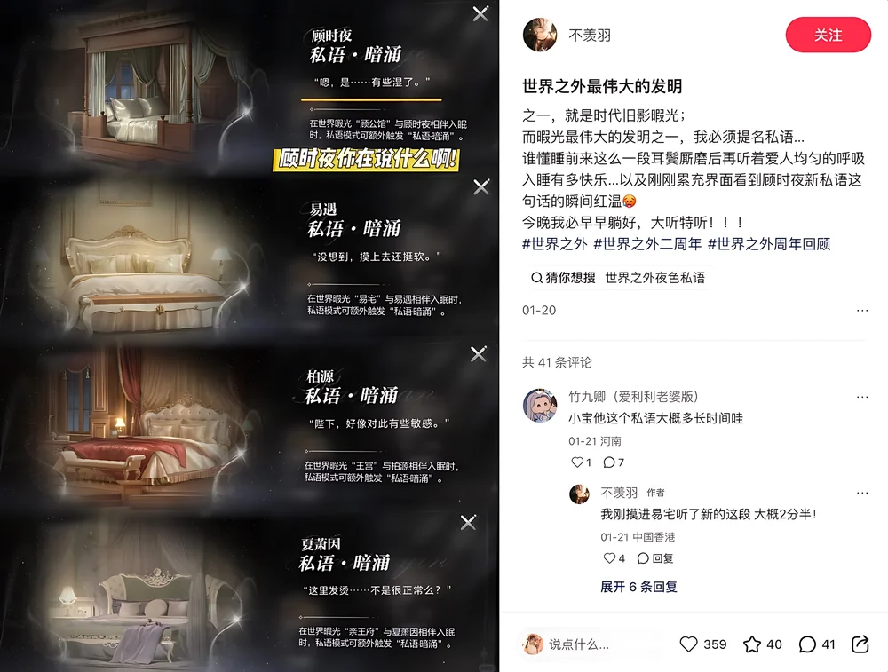

Product
Beyond the World
世界之外 · otome
Every system here supports one idea: he is a person who happens to be home, and the space works whether or not you interact with him.
The companion space was somewhere players stopped only to collect daily resources, then left.
A real-time companion space: a 24-hour schedule, sleep behavior, a day and night environment, and a paid audio layer called Whisper. I was the sole system designer, from concept to launch.
Players wrote that they stayed much longer, and described the characters as "just living their lives."
The space covers a bedroom and a study. Each system is built so that he seems to be living his day, not waiting in a menu.
He keeps his own 24-hour day. Your real-world clock decides where you find him and what he's doing: reading in the study, or already asleep in the bedroom.
Late at night he lies down and, left alone, drifts off on his own. Poke him and he might stir, or might not answer at all.
Day and night swap the full art set. The room sounds like the hour it actually is, and small controls give him room to react.
Touch, tap and talk draw from different short-scene libraries, unlocked through the main card-progression system. Whisper is the paid layer on top.
He feels real because the player cannot fully control him. These four decisions did most of that work.
He isn't summoned. Open the space and he is already there, doing something. Interaction is something you choose to add.
An invitation can be refused. A small chance of “not right now” does more for believability than any amount of polish, because real people aren't always available.
Companion content is gated by the main card-growth loop, so the relationship deepens as the player invests rather than unlocking all at once.
No prompts, no choices, no taps. With every interaction cue removed, it stops feeling like playing a game and starts feeling like lying next to someone.
What the player finds is decided before they touch anything, by the time of day they open the space.



Player reviews from RED (Xiaohongshu), translated.
Once the sleep-into-the-bedroom feature shipped, I spend so much longer in Aurora every day. I used to just collect my stamina and leave.
Player, RED · 小红书
Whisper is one of Aurora's greatest inventions. Drifting off to your partner's even breathing, right after a moment of closeness at bedtime. Nothing makes me happier.
Player · RED
Every character sleeps differently: pillow height, posture, whether he turns to watch you. Someone clearly thought hard about these details.
Player · RED
When he falls asleep the music quietly drops, then comes back when he wakes. I never expected a game to care about that.
Player · RED
I love the bedtime whispers, headphones on, lights off. If I weren't worried about my phone overheating I'd leave it running all night.
Player · RED
A screen that players used to visit only to collect daily resources became a place they choose to stay in. The paid Whisper layer gave them something worth buying while they were there.


Every choice in Aurora Bedroom answers the same question:
does this make him feel more like a person, or more like a button?
What I bring to a team: I design the loop and the feeling together, and I am willing to leave things out when the goal is attachment, not activity.